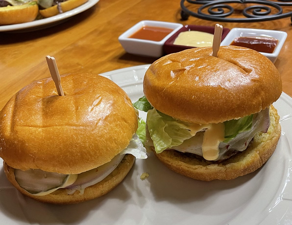

Interests
Games
I love everything surrounding the medium of video games. I enjoy playing/trying new games, reviewing/analyzing games, and even designing/developing games. Some personal favorites of mine include Hollow Knight, Mario Kart, and Elden Ring. Here's a screenshot from a game I created in one of my classes.
Music
I've been actively practicing a few instruments in the past few years, those being saxophone, electric bass, and piano. I enjoy listening music and trying to play instrumentals that I love. I'm also a member of RIT's GSO as an alto saxophone player. Here's a photo from our Spring 2023 concert.
Cooking
I've been learning to cook since high school, and since then I've found some of my personal favorite things to cook. I love to make smash burgers, enchiladas, stuffed pobalanos, and various pasta dishes.
Sports
I've loved sports for all my life, whether it be playing or watching. I've played countless sports in my life, but at the moment, I like to play basketball, volleyball, and I enjoy skiing/snowboarding. i most actively follow baseball, as I love the game and the stats assosiated with it, but I've also been watching hockey recently. I even traveled to Toronto with my girlfriend to see a Maple Leafs game.

Coding
I've always loved learning, and learning to code during my degree has been one of the most rewarding experiences I'm having. Between personal projects, school, and previous work, I've been learning a wide variety of concepts. This website is coded fully by myself! The satisfaction of problem solving and designing with code is just something that I love.